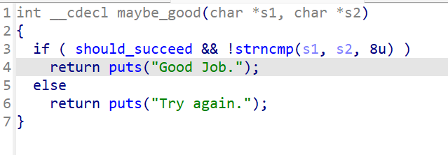
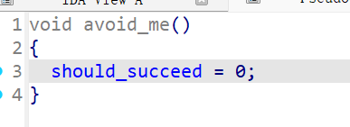

忘记在哪里偶遇了angr这个东西，正好有时间就学了一下，这里稍做记录
这个网站有17道题，由浅入深地考察angr的使用
可以用git克隆这个仓库到本地，里面有个dist的文件夹，放了编译好的二进制文件
前人的建议是angr的安装建议在虚拟环境里面，大概就是这样
python3 -m venv angr_env
source angr_env/bin/activate
pip install angr
之后开启虚拟环境运行写好的py就行了
python3 -m venv ~/angr_env # 创建虚拟环境
source ~/angr_env/bin/activate # 激活，提示符会变成 (angr_env)
00_angr_find
根据题目给的注释，大概可以总结出一个简单的框架
1 | path_to_binary = ??? # :string |
这道题用到的是simulation.explore(find = print_good_address)
01_angr_avoid
这题的文件很大，main函数都没有办法反编译，但是可以找到maybe_good和avoid_me函数


明显这个题目的用意就是告诉我们avoid_me这条路是错误的，通过同时寻找到正确和错误的路径来节省分析这个很大的二进制文件
这里用到的是simulation.explore(find = print_good_address, avoid = will_not_succeed_address)
比上一道题加了个avoid参数，效率明显快很多
这里试着去掉这个avoid，直接爆了（